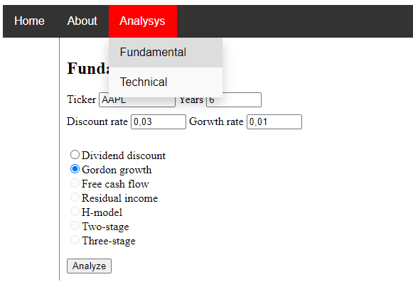
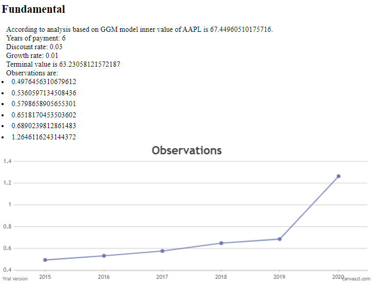

{% extends 'base.html' %}
{% block header %}
{% block title %}About{% endblock %}
{% endblock %}
{% block content %}
You can read about this project on github page.
This project provides functionality for analyzing financial data and predicting intrinsic value of securities.
For this purpose I utilize next tools:
yfinance as data provider.
Luigi workflow to download and parse data.
Flask to make user interface.
HTML, CSS and Javascript for visualization.
CanvasJS to ploting graphs.
To start you need to run flask application, then move to Analysis->Fundamentals, insert input values.
Note: Discount rate shuld be greater than growth rate.

For testing purposes you may use next tickers: MSFT, AAPL, F, FF, GM. Unfortunately for some prominent tickers like GOOGL, AMZN, etc. yfinance does not return data.
Output:

{% endblock %}